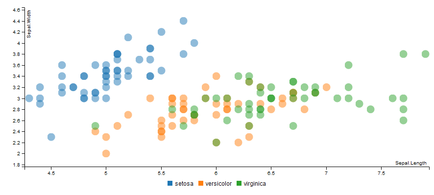
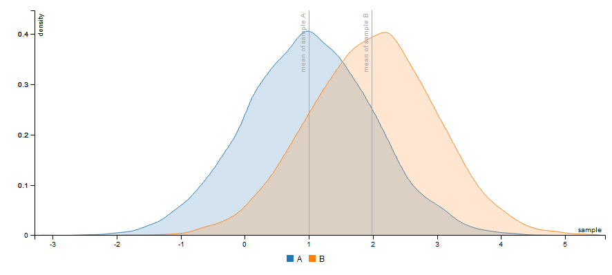

Htmlwidget for billboard.js

Overview
This package allow you to use billboard.js, a re-usable easy interface JavaScript chart library, based on D3 v4+.
A proxy method is implemented to smoothly update charts in shiny applications, see below for details.
Note : Development is heavily inspired by awesome highcharter by Joshua Kunst.
Installation :
# From CRAN
install.packages("billboarder")
# From Github
# install.packages("devtools")
devtools::install_github("dreamRs/billboarder")A markdown document with some examples is available here : http://rpubs.com/Victorp/billboarder_examples
Other examples:
Bar chart
You can do barcharts !
library("billboarder")
# data
data("prod_par_filiere")
# a bar chart !
billboarder() %>%
bb_barchart(data = prod_par_filiere[, c("annee", "prod_hydraulique")], color = "#102246") %>%
bb_y_grid(show = TRUE) %>%
bb_y_axis(tick = list(format = suffix("TWh")),
label = list(text = "production (in terawatt-hours)", position = "outer-top")) %>%
bb_legend(show = FALSE) %>%
bb_labs(title = "French hydraulic production",
caption = "Data source: RTE (https://opendata.rte-france.com)")
And dodge bar chart too !
library("billboarder")
# data
data("prod_par_filiere")
# dodge bar chart !
billboarder() %>%
bb_barchart(
data = prod_par_filiere[, c("annee", "prod_hydraulique", "prod_eolien", "prod_solaire")]
) %>%
bb_data(
names = list(prod_hydraulique = "Hydraulic", prod_eolien = "Wind", prod_solaire = "Solar")
) %>%
bb_y_grid(show = TRUE) %>%
bb_y_axis(tick = list(format = suffix("TWh")),
label = list(text = "production (in terawatt-hours)", position = "outer-top")) %>%
bb_legend(position = "inset", inset = list(anchor = "top-right")) %>%
bb_labs(title = "Renewable energy production",
caption = "Data source: RTE (https://opendata.rte-france.com)")
Even stacked bar charts !
library("billboarder")
# data
data("prod_par_filiere")
# stacked bar chart !
billboarder() %>%
bb_barchart(
data = prod_par_filiere[, c("annee", "prod_hydraulique", "prod_eolien", "prod_solaire")],
stacked = TRUE
) %>%
bb_data(
names = list(prod_hydraulique = "Hydraulic", prod_eolien = "Wind", prod_solaire = "Solar"),
labels = TRUE
) %>%
bb_colors_manual(
"prod_eolien" = "#41AB5D", "prod_hydraulique" = "#4292C6", "prod_solaire" = "#FEB24C"
) %>%
bb_y_grid(show = TRUE) %>%
bb_y_axis(tick = list(format = suffix("TWh")),
label = list(text = "production (in terawatt-hours)", position = "outer-top")) %>%
bb_legend(position = "right") %>%
bb_labs(title = "Renewable energy production",
caption = "Data source: RTE (https://opendata.rte-france.com)")
Scatter plot
Classic :
billboarder() %>%
bb_scatterplot(data = iris, x = "Sepal.Length", y = "Sepal.Width", group = "Species") %>%
bb_axis(x = list(tick = list(fit = FALSE))) %>%
bb_point(r = 8)
You can make a bubble chart using size aes :
billboarder() %>%
bb_scatterplot(
data = iris,
mapping = bbaes(Sepal.Length, Sepal.Width, group = Species, size = Petal.Width),
range = c(0.5, 120)
) %>%
bb_x_axis(tick = list(fit = FALSE))
Pie charts
If you have to, you can do pie charts !
library("billboarder")
# data
data("prod_par_filiere")
nuclear2016 <- data.frame(
sources = c("Nuclear", "Other"),
production = c(
prod_par_filiere$prod_nucleaire[prod_par_filiere$annee == "2016"],
prod_par_filiere$prod_total[prod_par_filiere$annee == "2016"] -
prod_par_filiere$prod_nucleaire[prod_par_filiere$annee == "2016"]
)
)
# pie chart !
billboarder() %>%
bb_piechart(data = nuclear2016) %>%
bb_labs(title = "Share of nuclear power in France in 2016",
caption = "Data source: RTE (https://opendata.rte-france.com)")
You can also do donut charts.
Lines charts
Time serie with Date (and a subchart)
library("billboarder")
# data
data("equilibre_mensuel")
# line chart
billboarder() %>%
bb_linechart(
data = equilibre_mensuel[, c("date", "consommation", "production")],
type = "spline"
) %>%
bb_x_axis(tick = list(format = "%Y-%m", fit = FALSE)) %>%
bb_x_grid(show = TRUE) %>%
bb_y_grid(show = TRUE) %>%
bb_colors_manual("consommation" = "firebrick", "production" = "forestgreen") %>%
bb_legend(position = "right") %>%
bb_subchart(show = TRUE, size = list(height = 30)) %>%
bb_labs(title = "Monthly electricity consumption and production in France (2007 - 2017)",
y = "In megawatt (MW)",
caption = "Data source: RTE (https://opendata.rte-france.com)")
Zoom by dragging
billboarder() %>%
bb_linechart(
data = equilibre_mensuel[, c("date", "consommation", "production")],
type = "spline"
) %>%
bb_x_axis(tick = list(format = "%Y-%m", fit = FALSE)) %>%
bb_x_grid(show = TRUE) %>%
bb_y_grid(show = TRUE) %>%
bb_colors_manual("consommation" = "firebrick", "production" = "forestgreen") %>%
bb_legend(position = "right") %>%
bb_zoom(
enabled = list(type = "drag"),
resetButton = list(text = "Unzoom")
) %>%
bb_labs(title = "Monthly electricity consumption and production in France (2007 - 2017)",
y = "In megawatt (MW)",
caption = "Data source: RTE (https://opendata.rte-france.com)")
Time serie with POSIXct (and regions)
library("billboarder")
# data
data("cdc_prod_filiere")
# Retrieve sunrise and and sunset data with `suncalc`
library("suncalc")
sun <- getSunlightTimes(date = as.Date("2017-06-12"), lat = 48.86, lon = 2.34, tz = "CET")
# line chart
billboarder() %>%
bb_linechart(data = cdc_prod_filiere[, c("date_heure", "prod_solaire")]) %>%
bb_x_axis(tick = list(format = "%H:%M", fit = FALSE)) %>%
bb_y_axis(min = 0, padding = 0) %>%
bb_regions(
list(
start = as.numeric(cdc_prod_filiere$date_heure[1]) * 1000,
end = as.numeric(sun$sunrise)*1000
),
list(
start = as.numeric(sun$sunset) * 1000,
end = as.numeric(cdc_prod_filiere$date_heure[48]) * 1000
)
) %>%
bb_x_grid(
lines = list(
list(value = as.numeric(sun$sunrise)*1000, text = "sunrise"),
list(value = as.numeric(sun$sunset)*1000, text = "sunset")
)
) %>%
bb_labs(title = "Solar production (2017-06-12)",
y = "In megawatt (MW)",
caption = "Data source: RTE (https://opendata.rte-france.com)")
Stacked area chart
library("billboarder")
# data
data("cdc_prod_filiere")
# area chart !
billboarder() %>%
bb_linechart(
data = cdc_prod_filiere[, c("date_heure", "prod_eolien", "prod_hydraulique", "prod_solaire")],
type = "area"
) %>%
bb_data(
groups = list(list("prod_eolien", "prod_hydraulique", "prod_solaire")),
names = list("prod_eolien" = "Wind", "prod_hydraulique" = "Hydraulic", "prod_solaire" = "Solar")
) %>%
bb_legend(position = "inset", inset = list(anchor = "top-right")) %>%
bb_colors_manual(
"prod_eolien" = "#238443", "prod_hydraulique" = "#225EA8", "prod_solaire" = "#FEB24C",
opacity = 0.8
) %>%
bb_y_axis(min = 0, padding = 0) %>%
bb_labs(title = "Renewable energy production (2017-06-12)",
y = "In megawatt (MW)",
caption = "Data source: RTE (https://opendata.rte-france.com)")
Line range
Don’t work in RStudio viewer… Open in browser.
# Generate data
dat <- data.frame(
date = seq.Date(Sys.Date(), length.out = 20, by = "day"),
y1 = round(rnorm(20, 100, 15)),
y2 = round(rnorm(20, 100, 15))
)
dat$ymin1 <- dat$y1 - 5
dat$ymax1 <- dat$y1 + 5
dat$ymin2 <- dat$y2 - sample(3:15, 20, TRUE)
dat$ymax2 <- dat$y2 + sample(3:15, 20, TRUE)
# Make chart : use ymin & ymax aes for range
billboarder(data = dat) %>%
bb_linechart(
mapping = bbaes(x = date, y = y1, ymin = ymin1, ymax = ymax1),
type = "area-line-range"
) %>%
bb_linechart(
mapping = bbaes(x = date, y = y2, ymin = ymin2, ymax = ymax2),
type = "area-spline-range"
) %>%
bb_y_axis(min = 50)
Histogram & density
You can do histograms !

With a grouping variable :
# Generate some data
dat <- data.frame(
sample = c(rnorm(n = 1e4, mean = 1), rnorm(n = 1e4, mean = 2)),
group = rep(c("A", "B"), each = 1e4), stringsAsFactors = FALSE
)
# Mean by groups
samples_mean <- tapply(dat$sample, dat$group, mean)
# histogram !
billboarder() %>%
bb_histogram(data = dat, x = "sample", group = "group", binwidth = 0.25) %>%
bb_x_grid(
lines = list(
list(value = unname(samples_mean['A']), text = "mean of sample A"),
list(value = unname(samples_mean['B']), text = "mean of sample B")
)
)
Density plot with the same data :
billboarder() %>%
bb_densityplot(data = dat, x = "sample", group = "group") %>%
bb_x_grid(
lines = list(
list(value = unname(samples_mean['A']), text = "mean of sample A"),
list(value = unname(samples_mean['B']), text = "mean of sample B")
)
)
Shiny interaction
Some events will trigger Shiny’s inputs in application, such as click. Inputs id associated with billboarder charts use this pattern :
Look at this example, chart id is mybbchart so you retrieve click with input$mybbchart_click :
library("shiny")
library("billboarder")
# data
data("prod_par_filiere")
prod_par_filiere_l <- reshape2::melt(data = prod_par_filiere)
prod_par_filiere_l <- prod_par_filiere_l[
with(prod_par_filiere_l, annee == "2016" & variable != "prod_total"), 2:3
]
prod_par_filiere_l <- prod_par_filiere_l[order(prod_par_filiere_l$value), ]
# app
ui <- fluidPage(
billboarderOutput(outputId = "mybbchart"),
br(),
verbatimTextOutput(outputId = "click")
)
server <- function(input, output, session) {
output$mybbchart <- renderBillboarder({
billboarder() %>%
bb_barchart(data = prod_par_filiere_l) %>%
bb_y_grid(show = TRUE) %>%
bb_legend(show = FALSE) %>%
bb_x_axis(categories = prod_par_filiere_l$variable, fit = FALSE) %>%
bb_labs(title = "French electricity generation by branch in 2016",
y = "production (in terawatt-hours)",
caption = "Data source: RTE (https://opendata.rte-france.com)")
})
output$click <- renderPrint({
cat("# input$mybbchart_click$category", "\n")
input$mybbchart_click$category
})
}
shinyApp(ui = ui, server = server)

Raw API
If what you want to do is not possible with higher function in the package, you can anyway do what you want, you just have to pass a list-JSON as parameter :
data(economics, package = "ggplot2")
# Construct a list in JSON format
params <- list(
data = list(
x = "x",
json = list(
x = economics$date,
y = economics$psavert
),
type = "spline"
),
legend = list(show = FALSE),
point = list(show = FALSE),
axis = list(
x = list(
type = "timeseries",
tick = list(
count = 20,
fit = TRUE,
format = "%e %b %y"
)
),
y = list(
label = list(
text = "Personal savings rate"
),
tick = list(
format = htmlwidgets::JS("function(x) {return x + '%';}")
)
)
)
)
# Pass the list as parameter
billboarder(params)
 Victor Perrier
Victor Perrier Fanny Meyer
Fanny Meyer